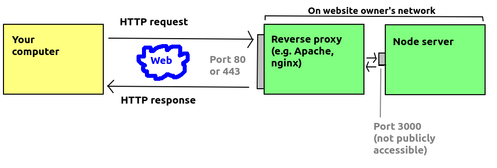
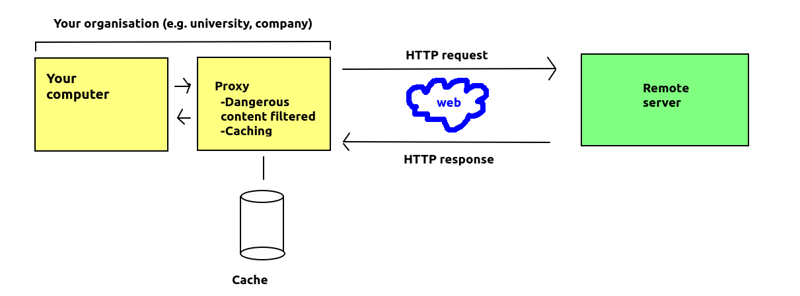

Today we will look at how we can deploy a Node app to a live server. There is also some information provided on dates and times for your own reading.
There is another issue to consider when running a Node application on a production server. Node applications typically run on a custom port, such as 3000. However, typical servers on a website (such as Apache) normally run on port 80, or port 443 if secure (HTTPS). However, it is not recommended to open non-standard ports to the wider internet, for security reasons - as it makes them vulnerable to exploits.
So you need to provide a 'backdoor' means for the outside world to access your server via a server running on the publicly available ports of 80 or 443, such as Apache. A common approach is to use Apache or a similar server as a reverse proxy. A reverse proxy is an intermediate, publicly-visible server which provides access to other private servers run by the same organisation. These private servers might be on different machines, or the same machine (as one machine can run both Apache and a Node server).
The diagram below shows a reverse proxy:

A reverse proxy is different to a "normal" proxy. A "normal" proxy provides access to the wider internet from a particular network. Proxies are often used by organisations to perform security checks on data being sent back from remote servers, so that machines on the organisational network are kept safer. They can also be used to provide caching services, so that for example if many people in an organisation request content from the internet, that content can be cached on the proxy meaning that next time it's requested, it will be requested from the proxy. The university provides a caching proxy, which likely caches your OpenStreetMap map tiles for example, meaning that if you request the same tiles again, they will be served from the proxy rather than from the OpenStreetMap tile server, reducing the load on the OpenStreetMap servers.
The diagram below shows a regular proxy:

A common server used as a reverse proxy with Node applications is Nginx. DigitalOcean have an article on this: here. Nginx is a lightweight server which is relatively easy to configure, which is why it is often used with Node applications.
With Apache you can set up a proxy using the mod_proxy Apache module (plugin). The steps to do this are as follows. Firstly (from the Linux command line):
sudo a2enmod proxy sudo a2enmod proxy-httpenables it. You then need to add some configuration commands to the Apache site configuration file (
/etc/apache2/sites-enabled/000-default.conf) on an Ubuntu Linux system.
ProxyPass /mynodeapp/ http://localhost:3000/ ProxyPassReverse /mynodeapp/ http://localhost:3000/ ProxyPassReverseCookieDomain http://localhost:3000/ http://localhost/ ProxyPassReverseCookiePath / /These four lines should be added to the <VirtualHost> tag within the
000-default.conf site configuration file. What these commands are doing, essentially, are allowing the Apache server to act as a reverse proxy, e.g. if Apache and your Node server are running on myserver.example.com, then a request for http://myserver.example.com/mynodeapp/ will be forwarded to the server running on Port 3000 on that machine.
The last two commands set up cookies correctly, to allow cookies to be shared between the Node server and Apache server.
Once you've done this, you need to restart Apache to reload the configuration file:
service apache2 restart
This relatively simple topic may help you in the assignment. To manage dates in JavaScript (both Node.js and client-side) you use the Date object. Here is a simple program making use of it.
// Array to convert the day number to the day name
const daysOfWeek = ["Sunday", "Monday", "Tuesday", "Wednesday", "Thursday", "Friday", "Saturday"];
// No arguments means the date represents now
const now = new Date();
// Display details about today's date
console.log(`Today is ${now.getDate()}/${now.getMonth()+1}/${now.getFullYear()}. It is a ${daysOfWeek[now.getDay()]}`);
// Repeat for the day the web was invented
const webDay = new Date('1989-03-12 12:00:00');
console.log(`The web was invented on ${webDay.getDate()}/${webDay.getMonth()+1}/${webDay.getFullYear()}. This was a ${daysOfWeek[webDay.getDay()]}`);
// Repeat for the day Mosaic (the first browser) was released
const mosaicDay = new Date('1993-01-23 12:00:00');
console.log(`The first browser, Mosaic, was released on ${mosaicDay.getDate()}/${mosaicDay.getMonth()+1}/${mosaicDay.getFullYear()}. This was a ${daysOfWeek[mosaicDay.getDay()]}`);
// Repeat for the day Firefox was released
const firefoxDay = new Date('2002-09-23 12:00:00');
console.log(`Firefox was released on ${firefoxDay.getDate()}/${firefoxDay.getMonth()+1}/${firefoxDay.getFullYear()}. This was a ${daysOfWeek[firefoxDay.getDay()]}`);
// For converting milliseconds to years
const millisecsInYear = 1000 * 60 * 60 * 24 * 365.25;
// Use date subtraction to find out how old the Web was when Mosaic and Firefox were released
const mosaicAge = (mosaicDay - webDay) / millisecsInYear, firefoxAge = (firefoxDay - webDay) / millisecsInYear;
console.log(`Mosaic was released when the web was ${mosaicAge} years old, and Firefox was released when it was ${firefoxAge} years old.`);
Note how we represent dates with a Date object. If no arguments are passed into the Date object, it will represent the current time. If we pass in arguments, such as a date string in the format DDDD-MM-YY hh:mm:ss, the Date object will represent a different day. The Date object has various methods such as:
getDay() - the day of the week from 0 (Sunday) to 6 (Saturday)getDate() - the day of the monthgetMonth() - the month, with January 0 and December 11, so you have to add one to give the number most people will be familiar with.getFullYear() - the full yearDate from another, to get the difference between them (in milliseconds). More information on dates can be found the Mozilla site.
Later material will be revised and is currently not available.